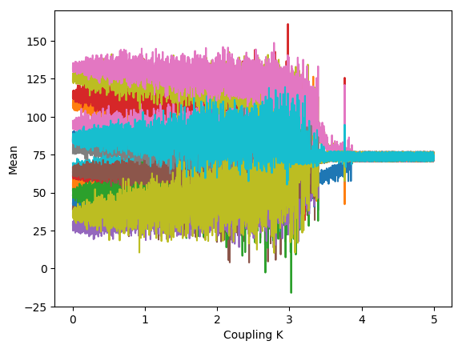
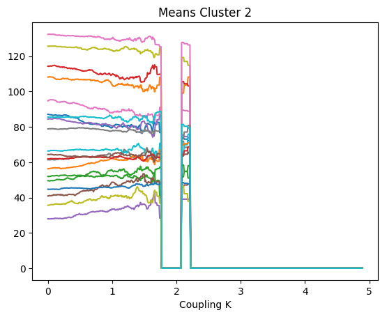
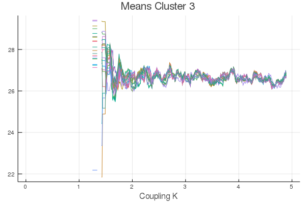
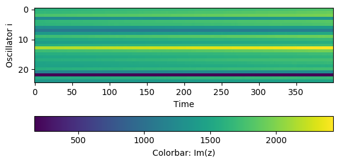
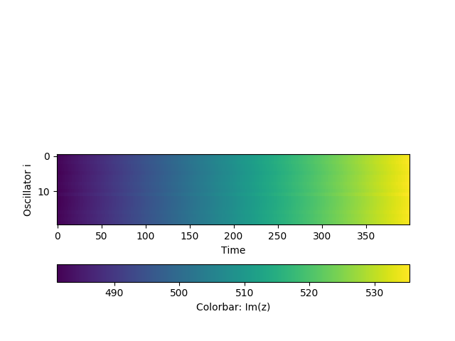
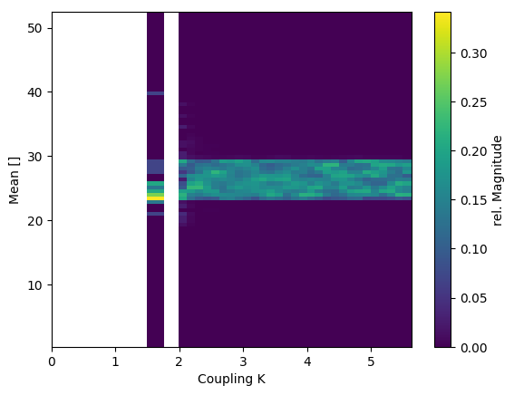
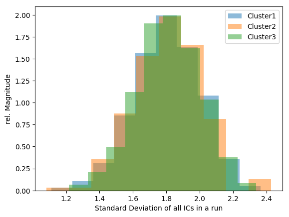
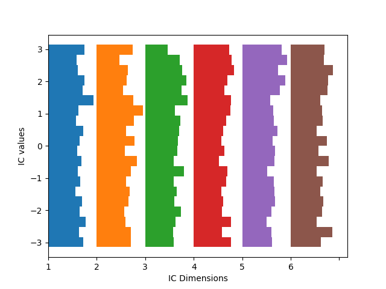

Introspective Features
This page showcases introspective features of the libary.
The example are First Order Kuramoto Oscillators with $\mathcal{N}(0.5,0.1)$ distributed eigenfrequencies on a Erdos Renyi random network. Subsequently the coupling is increased as the free parameter. The basic setup is identical to the previous section.
using MCBB
using LightGraphs
using Clustering
using DifferentialEquations
using Distributions
using StatsBase
using Plots
using Random
import PyPlot
Random.Random.seed!(13423);N = 20
K = 0.5
nd = Normal(0.5, 0.1)
w_i_par = rand(nd,N) # eigenfrequencies
net = erdos_renyi(N, 0.2)
A = adjacency_matrix(net)
ic = zeros(N)
ic_dist = Uniform(-pi,pi)
kdist = Uniform(0,5)
ic_ranges = ()->rand(ic_dist)
N_ics = 5000
K_range = ()->rand(kdist)
pars = kuramoto_network_parameters(K, w_i_par, N, A)
rp = ODEProblem(kuramoto_network, ic, (0.,1000.), pars)
# we also calculate the order parameter, we won't use it for clustering, but we'll use it as a check
function k_order_parameter(u::AbstractArray)
uend = u[:,end]
N = length(uend)
1. /N*sqrt((sum(sin.(uend)))^2+(sum(cos.(uend)))^2)
end
function eval_ode_run_kura(sol, i)
N_dim = length(sol.prob.u0)
state_filter = collect(1:N_dim)
eval_funcs = [mean, std]
matrix_eval_funcs = []
global_eval_funcs = [k_order_parameter]
eval_ode_run(sol, i, state_filter, eval_funcs, matrix_eval_funcs, global_eval_funcs, cyclic_setback=true)
end
tail_frac = 0.9 #
ko_mcp = DEMCBBProblem(rp, ic_ranges, N_ics, pars, (:K, K_range), eval_ode_run_kura, tail_frac)
kosol = solve(ko_mcp)The results are sorted by parameter value, show_results shows only results within the given parameter range.
normalize(sol:DEMCBBSol) normalized the results so that all measures are within the range $[0,1]$.
Cluster Membership
D_k = distance_matrix(kosol, ko_mcp, [1.,0.5,0,1.], histograms=true, k_bin=2); # no weight on the order_parameter db_eps = 110 # we found that value by scanning manually
db_eps = 1.15# we found that value by scanning manually
db_res = dbscan(D_k,db_eps,20)
cluster_members = cluster_membership(ko_mcp,db_res,0.1,0.025);
plot(cluster_members)
Plot Measures
- plot one of the measures dependend on the parameter with
get_measuregets the $k$-th measure. In this case the order is [mean, std, kl-div, order parameter] - get the parameter array with
parameter(prob::BifMCProblem) - here we plot the Order Parameter
plot(parameter(ko_mcp),get_measure(kosol,3), xlabel="Coupling K", ylabel="Order Parameter R")
Or do this with a sliding window:
p_wins, R_grid = measure_on_parameter_sliding_window(ko_mcp, kosol, 3, 0.2, 0.025);
plot(p_wins,R_grid[1,1,:], xlabel="Coupling K", ylabel="Order Parameter R",title="Slding Window Order Parameter")
Of course we can also get the multidimensional measures
plot(parameter(ko_mcp),get_measure(kosol,1), xlabel="Coupling K", ylabel="Mean")
In this plot we already see the onset of the synchronization.
Cluster Measures
We can restrict this analysis to single clusters as well.
With the methods 'clustermeasuremean' and 'clustermeasurestd' get the means and stds of selected measures seperatly for each cluster. We can plot these with an errorbar plot to get an intuition into typical values of these measures for each cluster and how they differ from each other.
colororder = ["blue","orange","green","red","purple","brown","magenta","olive","cyan"]
measure_1 = 1
measure_2 = 2
m1m = cluster_measure_mean(kosol, db_res, measure_1)
m1sd = cluster_measure_std(kosol, db_res, measure_1)
m2m = cluster_measure_mean(kosol, db_res, measure_2)
m2sd = cluster_measure_std(kosol, db_res, measure_2)
SC = PyPlot.scatter(m1m, m2m, c=colororder[1:length(m1m)])
PyPlot.errorbar(m1m, m2m, fmt="o", ms=0,ecolor=colororder, xerr=0.005*m1sd, yerr=0.1*m2sd)
PyPlot.xlabel("Average Mean")
PyPlot.ylabel("Average Std")
PyPlot.savefig("output_msk.png")
In this case we scaled the error bars, as the Stds of the measures is much larger than the differences in the Average meausres. This is due to the fact that the Kuramoto oscillators are all oscillating relativly fast in this setup. It is important to note that for Cluster 3, the synchronous state, the Stds have a very small Std, meaning that almost all trials in this cluster have the same Std. This is clearly a strong indicator for a synchronous state. Cluster 2 and the noise cluster have only a slightly different average mean and std, if one would decrease the DBSCAN \epsilon parameter, they would probably be classified as only one cluster.
The method cluster_measures gets the measure for each cluster seperately and applies a sliding window. The routine returns the parameter values of the sliding window, a $N_{cluster}\times N_{measures}\times N_{dim}\times N_{windows}$ array for measures that are evalauted for every dimension and a $N_{cluster}\times N_{measures}\times N_{windows}$ for global measures. For windows in which the cluster has no members a NaN is returned. This is (in constrast to missing or nothing) compatible with most plotting routines. We should however always define common x-Limits for the plots because of this. It returns these within a ClusterMeasureResult struct that can be plotted easily, as they are plot recipes defined.
cluster_meas_res = cluster_measures(ko_mcp, kosol, db_res, 0.1, 0.01);xlim_values = [0, 5]
plot(cluster_meas_res, 1, 1, xlims=xlim_values, title="Means Cluster 1", xlabel="Coupling K")
plot(cluster_meas_res, 1, 2, xlims=xlim_values, title="Means Cluster 2", xlabel="Coupling K")
plot(cluster_meas_res, 1, 3, xlims=xlim_values, title="Means Cluster 3", xlabel="Coupling K")
The method cluster_means returns the mean value of each measure for each cluster.
cluster_ms = cluster_means(kosol, db_res);
print("Means of the 3rd cluster: ")
print(cluster_ms[3,1,:])Means of the 3rd cluster: [29.4609, 29.4524, 29.4574, 29.4589, 29.4585, 29.4609, 29.4593, 29.4607, 31.5164, 29.4558, 27.5155, 29.4559, 29.4578, 29.4578, 29.4576, 29.4582, 31.7665, 29.4609, 29.4653, 29.595]Single Trajectories
With the method get_trajectory we can get the full trajectory of an example trial within a certain cluster. This can help us get a further impression of the nature of the trajectories inside the cluster.
IM = PyPlot.imshow(Matrix(get_trajectory(ko_mcp,kosol, db_res, 3,only_sol=true)), aspect=4)
PyPlot.ylabel("Oscillator i")
PyPlot.xlabel("Time")
cb = PyPlot.colorbar(IM, orientation="horizontal")
cb[:ax][:set_xlabel]("Colorbar: Im(z)", rotation=0)For the zeroth/Noise cluster we see an unordered system

and for the second cluster we see a synchronized system (except for one oscillator that is disconnected in this particular random network)

Cluster Measure Histograms
It is also possible to show how the histograms of a measure on a sliding window. cluster_measures_sliding_histograms does just that. It returns for each cluster and for each window a histogram of a measure of your choice as a ClusterMeasureHistogramResult.
cluster_hist_res = cluster_measures_sliding_histograms(ko_mcp, kosol, db_res, 1, 0.25, 0.125)
plot(cluster_hist_res, 1)
For the synchronized state the means are in a narrow band and outside of these band they are no values, while for the unordered cluster the means have a broad distribution.

Cluster Initial Conditions
ClusterICSpaces enables us to analyse which initial conditions lead to the different clusters. The $struct$ is constructed with ClusterICSpaces. Additional parameter bounds can be provided to rescrict the analysis to the specified parameter range. It returns the ClusterICSpaces-struct with the fields:
data::AbstractArray: Ncluster long Array of Ndim+1 (+1 for the parameter) Arrays with the ICs/Parameter, e.g.data[2][1]for the ICs of IC-dimension 1 that lead to results classified in cluster 2histograms::AbstractArray: Ncluster long array of of Ndim+1 histograms for each IC/Par dimension and Clustermeans::AbstractArray: means of datastds::AbstractArray: stds of data
Statistics of the ICs across their dimension. For each run the mean, stds, skew of the ICs used for this run is calculated, These are the distributions of theses statistics for all runs. For example certain clusters/behaviour must be favoured if the ICs are already very close together, thus possessing a small $std$
cross_dim_means::AbstractArraycross_dim_stds::AbstractArraycross_dim_skews::AbstractArray
cics = ClusterICSpaces(ko_mcp, kosol, db_res; min_par=1, max_par=4);PyPlot.plt[:hist](cics.cross_dim_stds[1], density=true, alpha=0.5, label="Cluster1")
PyPlot.plt[:hist](cics.cross_dim_stds[2], density=true, alpha=0.5, label="Cluster2")
PyPlot.plt[:hist](cics.cross_dim_stds[3], density=true, alpha=0.5, label="Cluster3")
PyPlot.xlabel("Standard Deviation of all ICs in a run")
PyPlot.ylabel("rel. Magnitude")
PyPlot.legend();
This shows the Stds of the ICs for each Cluster.
Next we plot the distributions of each IC dimension for each Cluster.
ICPlot = 1:6 # which IC dimensions to plot
cics_in = cics
i_cluster = 1 # which cluster to plot
hists = cics_in.histograms[i_cluster]
nbins = length(hists[1].weights)
n_dim = length(ICPlot)
weights = zeros((n_dim,nbins))
edges = zeros((n_dim,nbins+1))
for i=1:n_dim
weights[i,:] = hists[ICPlot[i]].weights
edges[i,:] = hists[ICPlot[i]].edges[1]
end
weight_maxima = maximum(weights;dims=2)
hist_range = [minimum(edges),maximum(edges)]
max_weight_maxima = maximum(weight_maxima)
x_locs = 0:(max_weight_maxima+0.05*max_weight_maxima):(sum(weight_maxima)+max_weight_maxima)
centers = (edges[:,1:end-1] .+ edges[:,2:end]) ./ 2
heights = diff(edges, dims=2)
fig, ax = PyPlot.subplots()
for i_hist=1:n_dim
ax[:barh](centers[i_hist,:], weights[i_hist,:], height=heights[i_hist,:], left=x_locs[i_hist])
end
PyPlot.xlabel("IC Dimensions")
PyPlot.ylabel("IC values")
ax[:set_xticks](x_locs)
ax[:set_xticklabels]([string(i) for i in ICPlot]);